Server Rates
7x Exp, 35x Drops, 10x Mvp Drops, Pre-re, episode 13.2, 20 Level party/devo range, Card Announcements, 1 castle woe with small guild limit, custom touhou cards, and lots of costumes!
Quality of Life
Classic Ragnarok, but with helpful features including linked kafras, 70% weight limit, helpful @ commands, resets, fun events, pvp ranking, downported dungeons, balanced cash shop hats, and much more!
Balancing Changes
Many classes have been rebalanced to ease the strain on skill trees, balanced cash shop hats, as well as enhancements to how some skills work. See the class list below!
Swordsman Class Changes.
- Swordsman
- Magnum break scales up after cast delay by level
- Endure hits scale up based on vit up to 16 hits
- 1h sword/2h sword masteries have increased damage and hit rate that scales based on your level
- Knight
- Remove gutterlanes
- Brandish does not require a peco
- Spear mastery has increased damage and hitrate that scales based on your level
- Pierce has more range and less cast time
- Spear stab has more range
- 2Hand quicken gives more crit, flee, and perfect dodge
- 1Hand quicken gives more def and mdef
- Crusader
- Faith has been reduced to level 5
- Demon's Bane and Angelic Protection have been removed
- Providence can be self casted and gives dark, holy, and undead resistance, only requires level 1 cure
- 2 hand quicken can be used with 1hand spears, but gives 2hand spear more crit and flee
- holy cross damage has been increased when using a 2hand spear
- Devotion does not need grand cross anymore, and has a slightly lower cast time at lower levels
- Shield Boomerang adds more damage based on hit
- Grandcross defense reduction set to 25% instead of 33%, health cost reduced to 15
- Lord Knight
- Spiral pierce only requires level 5 spear mastery
- Spiral pierce can be used with any weapon, but gives more damage with spears
- LK Concentration gives 20% more attack
- Aurablade lasts a bit longer
- Paladin
- Rapid Smiting uses similar damage bonus as Shield boomerang, has a bit longer after cast delay
- Gospel can move with the chant simlar to songs, cast again to cancel
- Matry's reckoning damage additionally increases based on vit
- Pressure after cast delay reduced
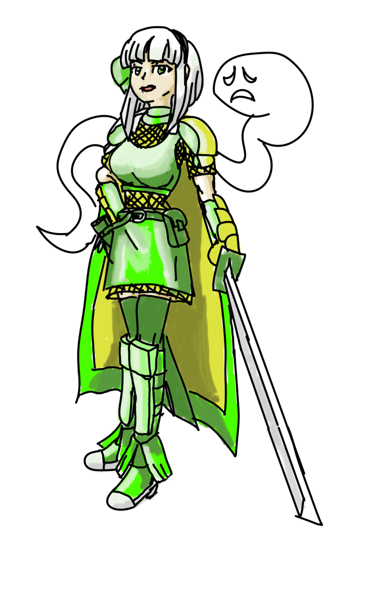
Acolyte Class Changes.
- Acolyte
- Teleport cool down is 0ms, heal now is on cooldown and is reduced time
- Agi Up has less after cast delay
- Pneuma only requires lvl 2 teleport
- Squash signum/decrease agi/angelus into 5 points instead of 10
- Angelus has less after cast delay
- Angelus doubled for each level
- Signum has reduced cast and after cast delay and
- Holy light requires less cast time and after cast delay, damage increased
- Blessing only requires level 3 divine protection
- Demon Bane damage ratio increased
- Divine Protection slightly reduces more damage
- Aqua benedicta can make 3 holy water with 3 bottles at a time
- Priest
- Knuckleshtmlo after cast delay reduced and increases matk
- Aspersio has less after cast time and less cooldown, longer duration
- Status Recovery has less after cast delay
- Sanctuary has less cast time and less after cast delay
- Resurrection now has a cooldown and a shorter after cast delay
- Lex Divina lasts longer at level 10 and has a cooldown instead
- Lex Aeterna no longer has a infinite duration, only lasts a few seconds
- Slow poison reduced to one point, is now a party skill, and additionally stops bleed effect
- Kyrie cast time scales up with level, cooldown scales down and takes more hits based on party size
- Magnificat less cast time and uses a cooldown instead
- Gloria has less after cast delay and has a longer duration
- B S Sacramenti now is a castable AOE attack and costs 5 holy water, range scales up with level, splash range gives everyone holy armor
- Turn Undead can damage normal mobs, has less after cast delay and non-one shot damage scales on matk * 2 and crit * 3
- Magnus Exorcism has less cast time that scales up and more hits at lower levels and uses a blue gem at lvl 4-10 and can hit normal mobs for less damage
- Mace Mastery has additional hitrate, attack speed, and damage when equipped with a mace
- Monk
- Maces are slightly faster
- Triple attack can be freely casted with a slight after cast delay and can be chained into a combo
- Triple attack proc rate is increased by 10% with knuckles/fists, +5% without a shield, 5% with 1h mace, and 1% per ironhand level
- Absorb Spirits proc chance increases by 10% per unequipped hand up to 40%, now has a cooldown and less cast time
- Combo finisher has a slightly improved skill rate, higher with knuckles, ignores flee
- Steel body has slightly less aspd penalty
- Asura has a 8 second cooldown
- Iron fist mastery gives higher damage and hit rate based on skill and base level for barefist and knuckles
- Champion
- Chain Crush now ignores flee and has a ratio bonus of 15% with maces and 10% otherwise
- Tiger fist now ignores flee and has a ratio bonus of 25% with knuckles and 15% otherwise
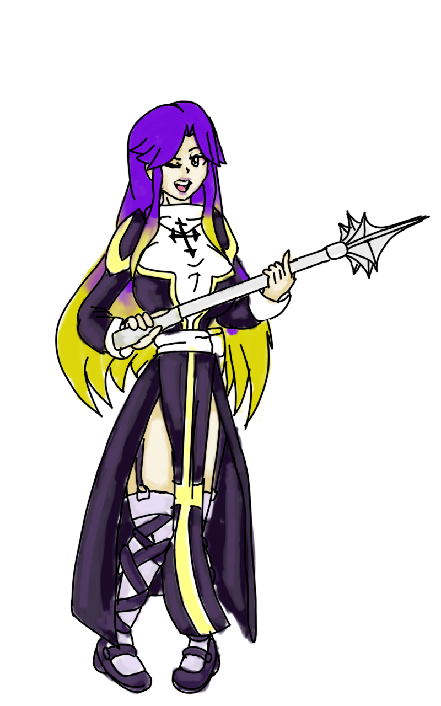
Archer Class Changes.
- Archer
- DS consumes 8-16 sp based on level
- Arrowshower has greater knockback and uses 10 arrows, can be casted with whips and instruments
- Improve concentration decreased sp cost
- Hunter
- Blitz now scales higher with int and dex
- Auto-blitz now works with both knives and bows
- traps use a better damage scale skill lvl * (int + 100) *(70 + dex) / 70
- Elemental traps scales higher with int and dex
- Blitzbeat does 2 2 4 4 6 hits according to level
- Ankle Snare requires 3 traps and has a short cooldown
- While soul linked, all trap costs reduced to 1
- Bard and Dancer
- Songs have full walk speed regardless of link, song effects also last longer
- Arrowshower can be used with instruments and whips
- Fortune/Humming/Slow Grace/Apple/Sinx/Whistle songs only require level 1 dissonance/ugly dance
- Arrow throw can be used during song at lvl 5 or higher dancing/music lessons level
- Fortune adds more to crit, Humming adds more hit and uses less sp, Whistle adds more flee and uses less sp
- Lullaby, Abyss, Drums, Siegfried, Nibelungen have increased song range, Lullaby having the greatest range
- Clown and Gypsy
- Tarot card now is on a cooldown and has a reduced after cast delay
- Arrow vulcan has a short after cast walk delay that scaled by level and can be cast while playing a song
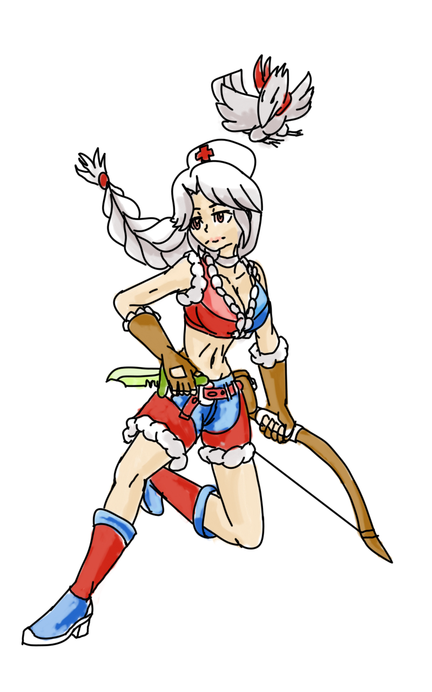
Thief Class Changes.
- Thief
- Pick up stone now picks up 3 stones at a time
- Throw stone increases on str
- Envenom skill ratio increased and requires less sp
- Detox uses less sp
- Rogue
- Gangster Paradise only requires level 1 divest helm
- Reduce flag graffiti to 1 point
- Raid skill ratio increased
- Sword mastery increases hitrate and damage with swords and knives
- Assassin
- Sonic blow has a shorter after act delay
- Enchant Poison has more range and less sp cost, adds +30 atk
- Poison React has less sp cost and requires level 1 enchant poison, skill ratio increased, and damage increases with a shield
- Venom dust uses red gem lvl 4 and higher and uses level 3 enchant poison
- Sonic blow has reduced def up to 15% on cast
- Venom splasher uses red gem lvl 4 and higher and works at less than 7/8th health, has a shorter activation time, and increases damage with daggers.
- While soul linked, venom splasher has no gem cost
- Poison has slightly lower tick rate for more damage over time
- Katar mastery has higher damage and hit rate
- Stalker
- Preserve acts as a toggle, has an infinite duration, and recasting disables it
- Assassin Cross
- Create deadly poison is based on base level and job level + luk up to 99
- Enchant deadly poison has less after cast delay
- Soul Destroyer is now affected by advanced katar mastery, has less after cast delay, range of 9 cells, and less cast time
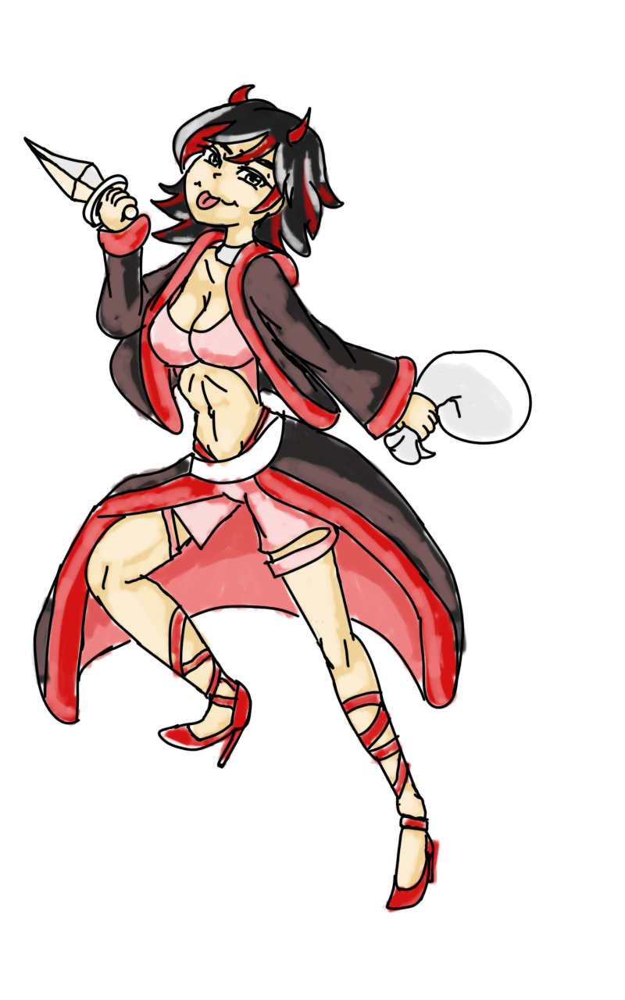
Merchant Class Changes.
- Merchant
- Reduce mammo cost by 50% if discount is lvl 5 or higher
- Cart revo has more splash attack range and 1.2% damage per weight
- Loud uproar is now a party buff and has a slight cast time and cooldown, adds +30 atk
- Blacksmith
- Forging requires half of mats to forge weapons
- Forging skills has no pre-reqs and is 1 point per skill
- Forging success rate scales on job level, base level, and by luk
- Overthrust does not break weapons
- Iron/steel/enchanted stone are level 1 and changed to handle lower level
- Hilt bind slightly increases attack
- Greed has a greater range of 7
- Weapon research increases damage and hit based on skill level
- Hammer fall now does damage, force neutral, split damage, and scaling sp cost up to 15
- Alchemist
- Creating bombs and mats require less materials
- Creating potions/bottles/bombs does not require Vanil's skill, rather it depends on your homunculus intimacy level.
- Formula for potion/mat creation is based on base level, job level, with int and luk
- Acid terror doesn't require mats at level 2 and deals additional hits per level 2 2 3 3 4
- Demonstration doesn't require mats at level 1, time reduced, hit interval shortened, skill ratio increased for more damage ticks over time
- Demonstration after cast delay scales down based on level
- Axe Mastery increases hitrate and damage
- Homunculus defense rate changed to baselevel / 5 instead of baselevel / 10
- Homunculus Friendliness rate set to 3x
- Whitesmith
- Cart Term ignores defense
- Cart Term and Tomahawk throw can be used with meltdown and other equip breaking skill,
- Cart Term cost can be reduced with level 10 discount and unfair trick
- Max overthrust costs 500 less zeny
- Upgrade weapon is condensed to level 5 with each level allowing for levelx2 refine up to 10 at level 5
- Creator
- Cultivation skill increased to 80% success rate
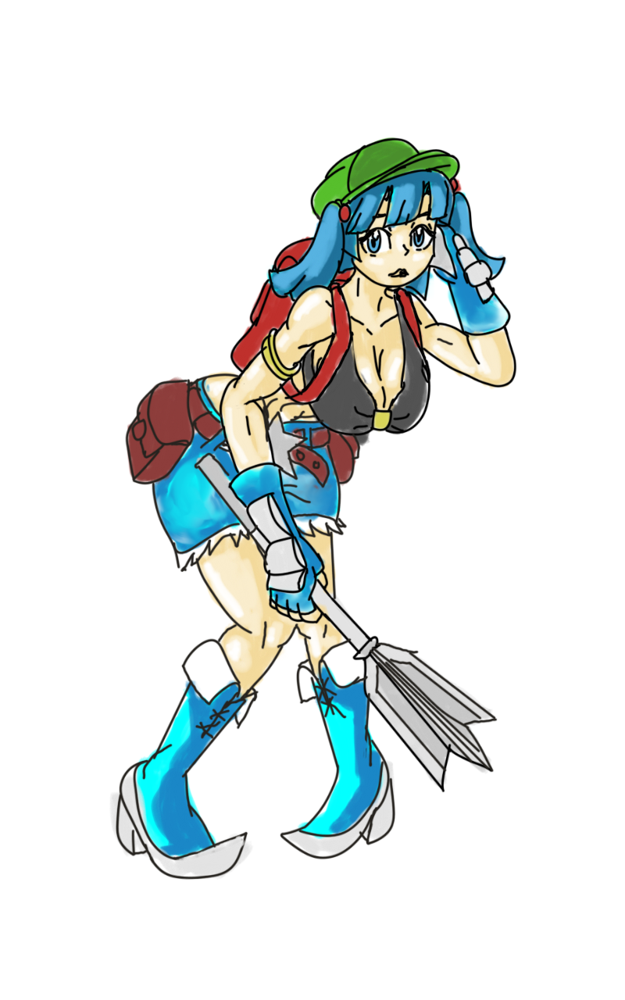
Mage Class Changes.
- Mage
- SP recovery decreases after cast delay by 1% per level (also for priest)
- Napalm has a larger splash range and after cast delay is reduced at higher levels
- Frost diver requires level 4 cold bolt has a shorter after cast delay
- Soul strike requires lvl 1 napalm
- Fire, Cold, and Lighting bolts have a lower after cast delay
- Safety wall only requires 1 point of napalm and lvl 5 soul strike
- Safety wall 10 has even less cast time but more sp cost (also for priest)
- Thunderstorm does 100% damage based on the skill ratio, splash range increases based on level up to 4
- Wizard
- Fire pillar has less after cast delay at higher level
- Quagmire has a cooldown instead of after cast delay
- Heaven's drive does additional hits at lower levels 2 2 4 4 5, is on a cooldown
- Earth spike cast time slightly reduced
- Stormgust causes slightly greater knockback, after cast delay reduced, and instead has a cooldown time
- Frostnova has a greater splash range at higher levels 2 2 3 3 4 4 5 5 5 6, cast time scales down on ligher levels, and has a cooldown instead
- Waterball cast time is shorter up to half the cast time at level 5, can be used outside of water but for less damage
- LoV has a range of 7 instead of 5, cast time shortened, after cast delay shortened, set to cooldown instead
- Meteors has a splash range that scales based on level 2 2 2 3 3 3 3 3 4 4, cast time scales based on level, cool down scales up based on level, and a shorter interval(more damage in a shorter time), level 9/10 having greater splash
- Sight thrasher has a splash range of 4, knock back scales on level 3 4 4 5 5 6 6 6 7 7, cooldown scales on level, half cast time
- Sight Blaster has a bit more knockback
- Sage
- Daggers and books are slightly faster
- Spell breaker requires less cast time
- Hindsight requires less cast time and has a higher chance to proc
- Bolt spells can be casted up to 3/5ths of the max level learned at lvl 6
- Soul strike up to 3/5ths at lvl 8
- Napalm can be casted up to level 10 at lvl 1
- Fireball can be casted to lvl 5 at lvl 9 and 5 at lvl 10
- Frostdiver can be casted to lvl 3 at lvl 10
- Earthspike can be casted to lvl 3 at lvl 8-10
- Land protector only requires level 2 of volcano/wirlwind/deluge
- Dragonology gives up to 5% mdef pierce to dragon race
- Book mastery gives additional attack speed by level
- High Wizard
- Gravitation does not need a blue gem at level 1, level decreases interval of damage (more damage in a shorter time), cast time reduced and set on a cooldown instead of acd
- Napalm vulcan does not split damage, splash range increased, number of hits increases up to 6 at level 5, now on cooldown
- Professor
- Memorize now acts as a party skill, non-professor classes get a 20% cast reduction instead
- Double cast now acts as a party skill, if you opted for a autobolt build, this should double your bolts
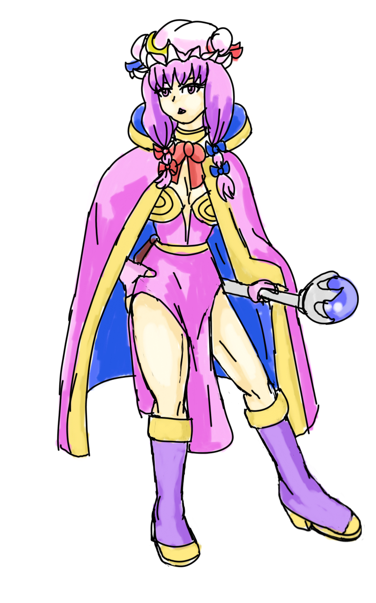
Gunslinger Changes
- Triple shot range scales on snake eyes level and uses less sp
- Ghost bullet scales on matk and range scales on snake eyes
- Tracking cast time is reduced based on level (not dex), range is increased based on snake eyes level, and damage increases with rifles
- Disarm range scales on snake eyes level
- Piercing shot can be used by any weapon and damage increases with rifles
- Coin skills do not require any skills from other trees
- Coin flip does not reduce spheres on failure
- Cracker scales on snake eyes
- Gatling fever gives +5 aspd on top of the lvl aspd bonus
- Coin fling damage scales on str
- Accuracy increase has reduced sp cost, gives critical rate, and can be cast on all party members, costs 5 coins
- Dust has a slight range increase and damage increase
- Full Blast has reduced SP cost
- Spread attack has greater splash range at higher levels and costs less sp
- Rebellion guns and ammo is now available at gunslinger vendor west of Protera fountain
- AP Ammo, Sanctified Bullet - lvl 90, Blazing/Freezing/Electric/Stone Ammo - lvl 70
- Gatling attack speed increased near fist attack speed
- Gatling Fever increases attack speed and damage based on level
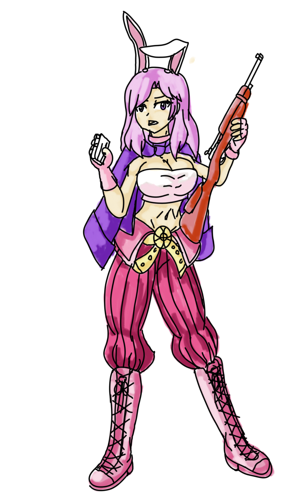
Ninja Changes.
- Throw huuma shuriken has shorter cast/after cast delay, damage no longer splits
- Throw zeny costs less except lvl 10
- Mirror image/fire formation/fire dragon/ice meteor/lightning strike is free at lvl 1
- Vanishing slash has reduced sp cost
- Shadow jump 5 has a range of 18
- Ninpo is now a party skill
- Ninja mastery gives 1% mdef pierce per level up to 5%
- Throwing practice gives 1% def pierce per level up to 5%
- Killing strike HP reduction scales up to 10% remaining at lvl 10
- Ninja can now dual weld knives
- Ninja can now use some one hand swords (attack speed adjusted to be slower than knife):
- Tsurugi
- Haedonggum
- Platinum Shotel
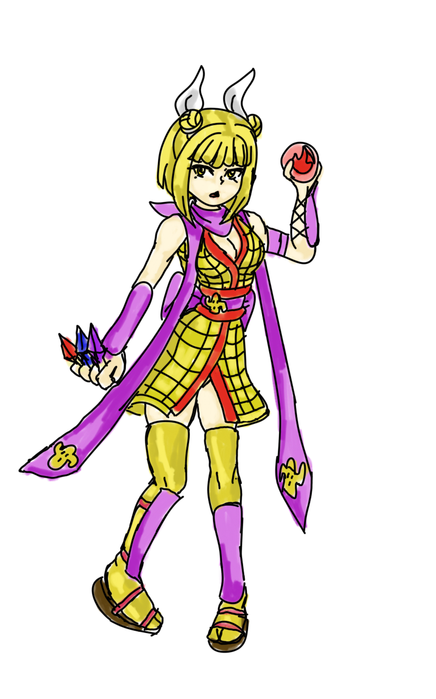
Star Gladiator Changes.
- Taekwon Kid
- Kick Stance proc rate increased by 25%
- Each Kick's damage ratio has been increased
- Taekwon Master
- Protection requires base level + job level + Dex to scale
- Wrath requires base/job+Dex
- Miracle/Angel status proc rate increased to 5%
- The 2 hp/sp costs of skills has been reduced to 1hp/sp
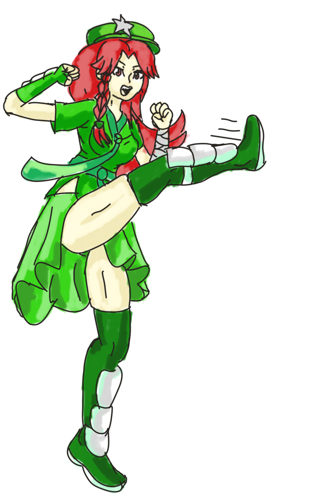
Soul Linker Changes.
- Fists and daggers are faster
- Links can not be dispelled
- Knight link magnum break does extra damage
- Sage link double mdef pierce to dragons with dragonology
- Alchemist link max axe mastery does not miss
- TKM link while spurt is active increase hp/sp regen by 35%
- Passive Link given to Soul Linker:
- Hunter link passively increases SL maximum melee range
- Bard/Dancer link gives SL -10% sp cost
- TKM link gives +10 crit
- Blacksmith link gives SL +25 hit
- Soul linker link gives SL up to +10% mdef pierce
- SN link gives SL +5 to all stats
- Trans 1st class - +30% hp/sp regen
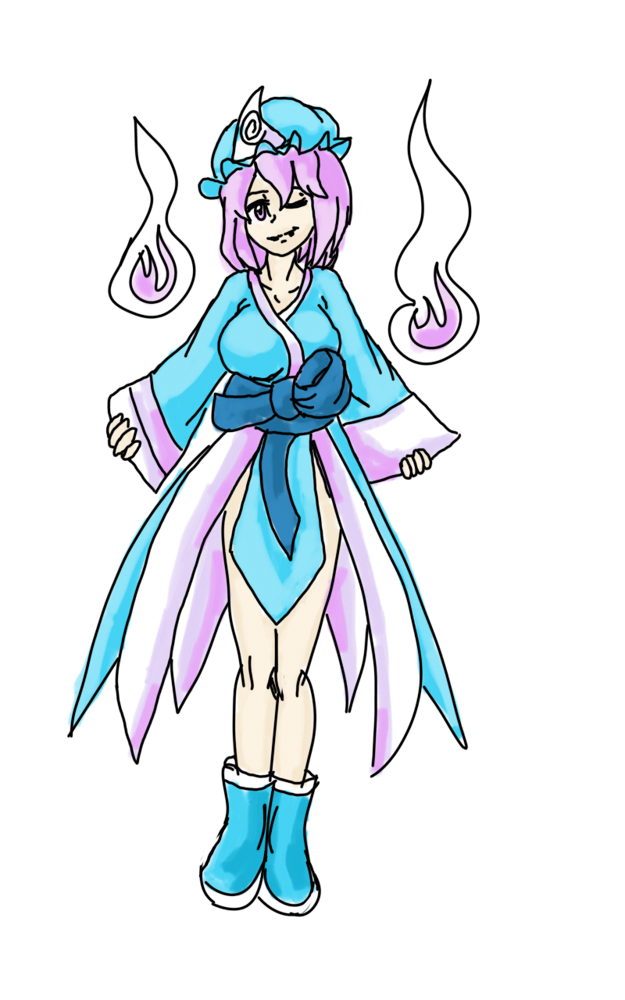
Super Novice Changes.
- Any changes above for first jobs are also applied to super novice, plan accordingly
- SL death reset chance increased for super novice
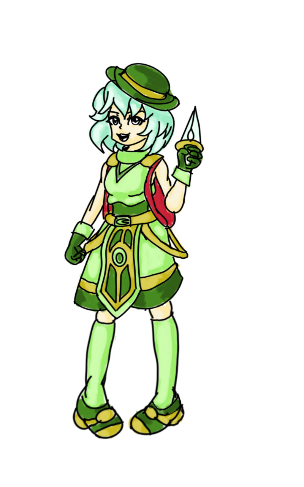
Touhou Themed Cards are available in the Main Office, Please note these do not include requirements or penalties, plan accordingly:
- Reimu: Gangsters Paradise, Sphere throwing
- Marisa: Rogues can use plagerism
- Alice: Enables Marionette
- Aya: Wind blade autospell and Increase Agi
- Hijiri Byakuren: Sanctuary autospell and Mace Mastery gains Holy Cross autospell
- Chen Yakumo: GS Adjustment autospell when attacked
- Chimata: Vending, Compulsion, Steal Money, Finding ore
- Cirno: Frost Nova autospell
- Dayosei: Cold bolt autospell
- Flandre: Coma with napalm beat, gem drops, and self inflicted bleeding
- Junko: Star gladiators gain 100 hp/sp on kill and get purify skill
- Kagerou: Males get Kagemusya, Females get Zangetsu, enable left/right hand masteries
- Mamizou: Enable Estimation, sages get indulge, rogues get Strip Accessory, Triangle Shot
- Nitori: Gunslinger can auto spell heat barrel, enable twilight alchemy and full adrenaline rush based on refine
- Nue: Cause Confusion, Trident damage, 1h Quicken and splash attack based on refine
- Orin: push cart and cart revolution
- Patchouli: Similar to CD in mouth
- Ran Yakumo: various links now enable melee skills for SL
- Reisen: Enable Richmans coin, Various gun autospells
- Remilia: Autospell volcano, absorb HP, lose 666 hp/sp on unequip
- Rumia: Shadow slash +10% damage, fogwall autospell, and meat drops when killing humans
- Sakuya: Perfect hit, enable venom knife, +10% venom knife damage with venom knife, Auto spell Dec Agi
- Sanae: Enable Wind Blade, gain a chance to drop red gems
- Shou: Enable spiral pierce and spiral pierce autospell, LKs get extended range but health drain
- Tenshi: SP cost reduction for bash/double strafe, Pressure autospell, sacrifice autospell
- Utsuho: Enable Recognized spell, orb summon skills, and tetra vortex
- Youmu: Enable auto counter, Knights get +10% crit damage, LK gets a chance to get ghost weapon enchant
- Yukari: Gain warp portal 2, blue gems get a chance to drop based on safety wall level
- Yuyuko: Eating items adds +20% more hp, sages can use soul exhale
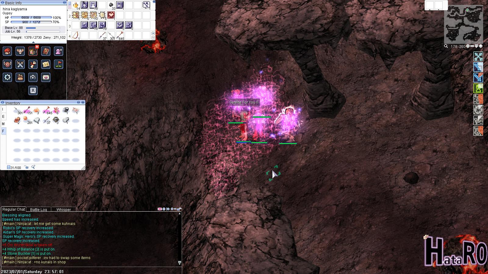 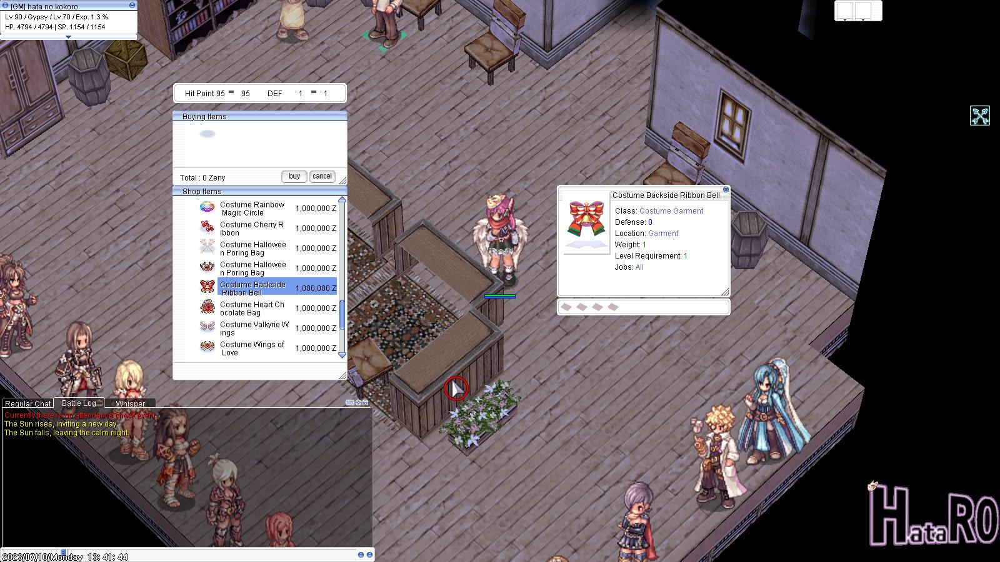 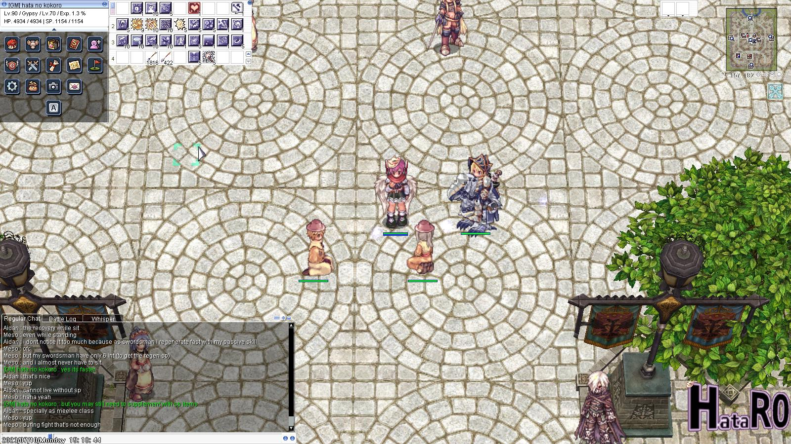